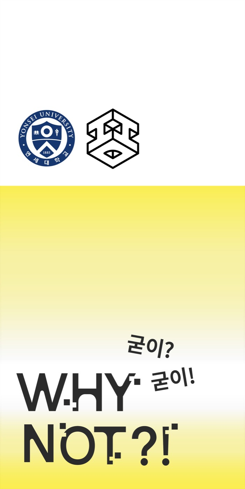
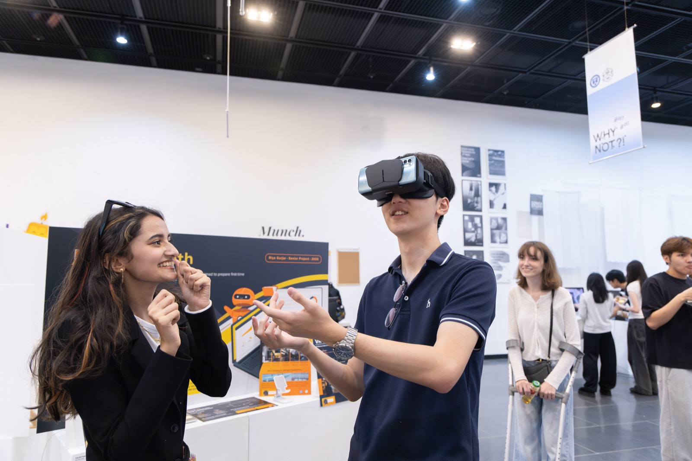

WHY NOT?!

Define
12 very different works, from apps and games to motion graphics and tableware, needing one name and attitude to hold them together
A direction that shows graduating students taking risks, without making the whole show feel heavy
Process
Name and concept
Starting from the idea that the first step of people who say "why not?" changes the world
WHY NOT?! paired with "굳이? 굳이!", a question and its answer in one name

Exhibition description
WHY NOT?! (굳이? 굳이!) begins by asking "why bother?" about the things we often take for granted, and answering with a simple "why not?"
We are pleased to present ⟪WHY NOT?!⟫, the 12th Graduation Exhibition of the Information & Interaction Design Major at Yonsei University. Through digital design and interaction, the exhibition looks at everyday frictions and assumptions from a new perspective, turning small questions into new attitudes and possibilities.
Why should we think differently?
Why not?
Color concept
Built on Yonsei blue, with yellow for students' raw, unpolished ideas
A blue-to-yellow gradient set a light tone for the show, applied to the poster and hanging banners



Leaflet as a stamp tour
Front for the show and its artists, back as a map of five zones and a stamp tour
Built so visitors walk through every zone


Result
Held successfully Oct 17–24, 2026 at Baekyangnuri Muak Rotary Hall
Drew 200+ outside visitors
Featured in the UIC Newsletter
At the exhibition


